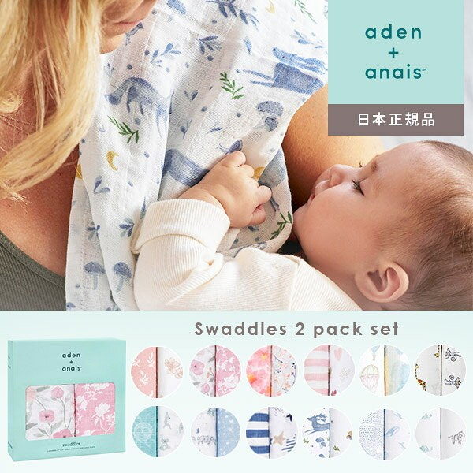
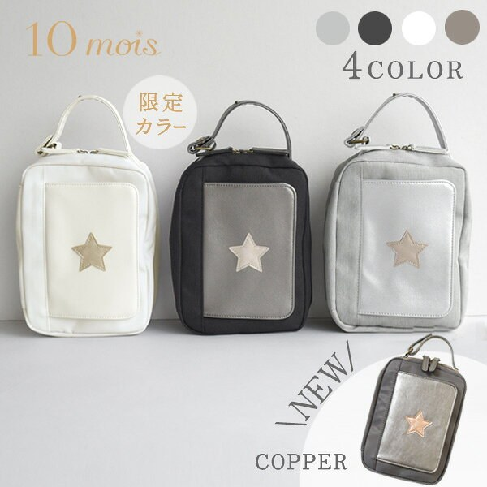
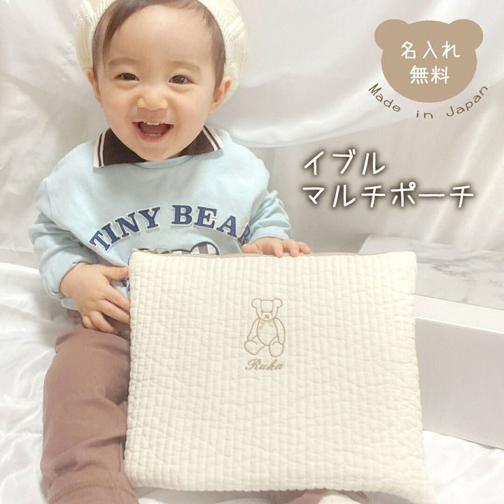
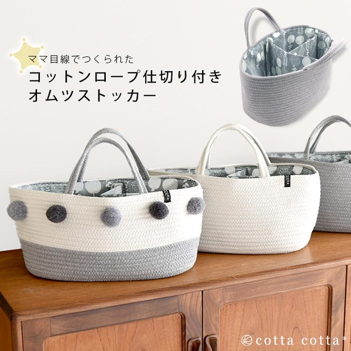
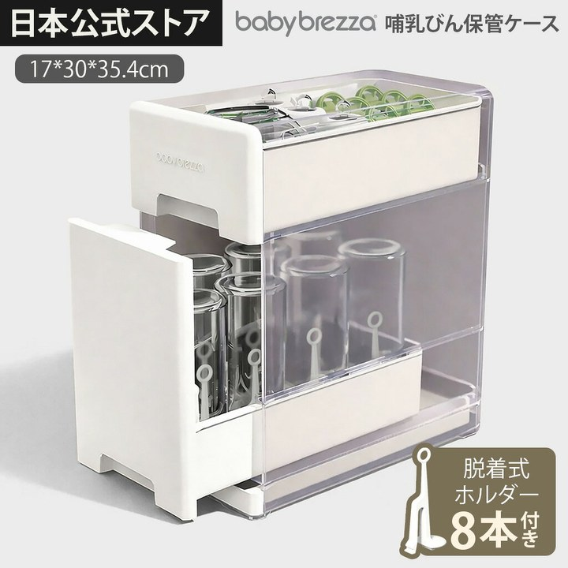
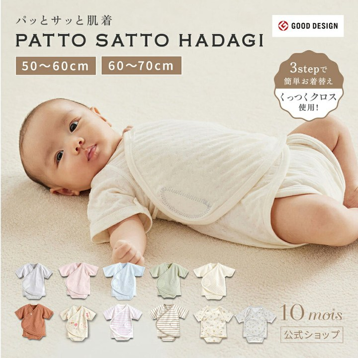
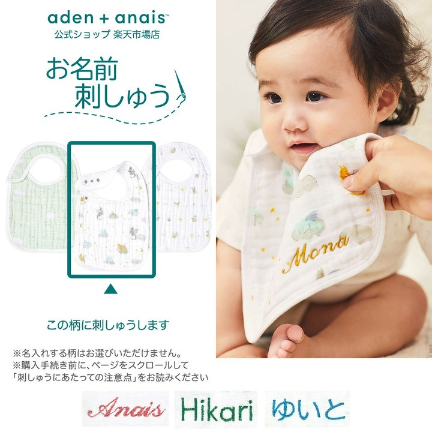
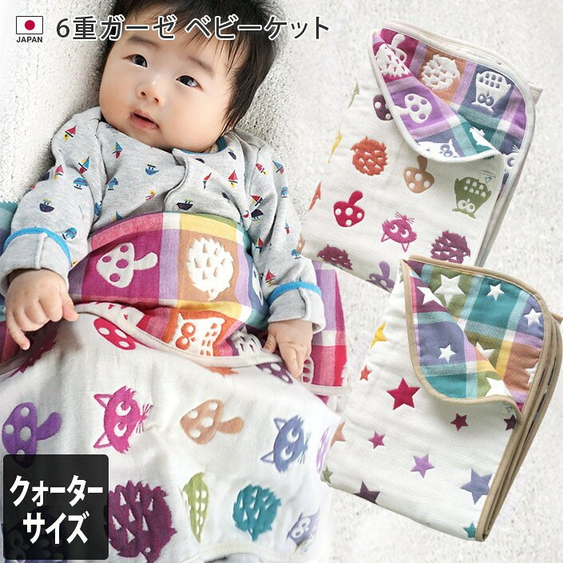

寝かしつけ・夜泣き夜を越えるための道具。夜間対応で消耗している人向け。

洗うたびに柔らかくなる。モスリンは目が粗いぶん乾きも早くて、夜のうちに洗って朝には使えます。2枚あると、片方が乾くまでの間が埋まります。 エイデンアンドアネイ aden+anais コットン スワドル おくるみ 2枚セット ( ベビー 赤ちゃん 新生児 男の子 女の子 モスリン ¥4,730 楽天市場で見るおむつまわり1日10回以上さわる場所。ここが楽になると生活が変わる。

赤ちゃんを押さえたまま開く。フラップがワンタッチなので、片手が塞がった状態でも中身を出せます。同じ用途の8件の中で、レビューが最多（145件）でした。 ＼当店限定ホワイト登場！／ 10mois ディモワ ワンタッチ おむつポーチ フラップ付き / グレー / ブラック / ホワイト / コパ ¥4,730 楽天市場で見る
鞄の中で潰れない。イブル生地は厚みがあって自立するので、おむつと着替えを入れてもかたちが崩れません。名前を入れられるので、預け先で取り違えられません。 イブル Lサイズ マルチポーチ 名入れ 日本製 名入れ無料 テディベア 出産祝い 1歳誕生日 名入れ 出産祝いギフト お誕生日 1歳 男の子 ¥2,980 楽天市場で見る
出しっぱなしが前提になる。おむつは1日10回以上さわるので、しまうと続きません。コットンロープのカゴなら、リビングに置いても生活感が出にくい。取っ手付きで部屋を移動できます。 オムツストッカー コットンロープ 取っ手付き オムツ入れ 収納 バスケット 仕切り おもちゃボックス 持ち手 出産祝い おむつバッグ おむつ ¥2,790 楽天市場で見る授乳・ミルク授乳まわりで実際に使っているもの。

洗ったあとの置き場が要る。水切りラックに蓋が付いていて、乾かしながらほこりを避けられます。哺乳瓶は本数が増えるので、まとめて置ける場所があると台所が片付きます。 [Baby Brezza] 哺乳瓶保管ケース 収納ケース 水切り乾燥ラック 蓋付き 育児 ほこり防止 清潔 衛生 大容量 スリム スタイリッ ¥5,980 楽天市場で見る肌着・ウェア新生児サイズはすぐ小さくなるので、枚数で回すもの。

腕を通さなくていい。面テープで前を留める作りなので、寝ている相手の腕を袖に入れる作業がなくなります。50-60と60-70があるので、今の身長で選べます。 ★面テープで簡単お着替え！ PATTO SATTO HADAGI 50-60cm・60-70cm [ベビー肌着 赤ちゃん肌着 パッとサッと肌 ¥3,740 楽天市場で見るガーゼ・タオル何枚あっても足りないもの。洗濯を回すための在庫。

名前を書く手間が消える。刺繍で入れてもらえるので、保育園に持っていくときに油性ペンを探さずに済みます。同じ用途の8件を見比べて、価格と評価の釣り合いが一番よかったものです。 《無料 お名前刺繍》スタイ 名入れ ビブ 3枚 セット エイデンアンドアネイ公式 よだれかけ ガーゼ お食事 エプロン 赤ちゃん aden+ ¥2,640 楽天市場で見る
小さいほうが使いやすい。70×100は抱っこのときに掛けてちょうどで、大判だと余った布が足元に垂れます。6重ガーゼで日本製、洗濯機で回せます。 日本製 6重ガーゼ ベビーケット クォーターサイズ / 約70×100cm ベビーグッズ ケット ガーゼケット タオルケット コットン ガー ¥4,620 楽天市場で見る